Graphing#
2023, Free Response, #5
x |
0 |
2 |
4 |
7 |
|
10 |
7 |
4 |
5 |
|
|
-8 |
3 |
6 |
|
1 |
2 |
-3 |
0 |
5 |
4 |
2 |
8 |


The functions  and
and  are twice differentiable. The table shown gives the values of the functions and their first derivatives at selected values of x.
are twice differentiable. The table shown gives the values of the functions and their first derivatives at selected values of x.
Let
 be the function defined by
be the function defined by  . Find 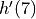. Show the work that leads to your answer.
. Find 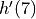. Show the work that leads to your answer.Let
 be a differentiable function such that 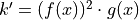. Is the graph of concave up or down at the point where
be a differentiable function such that 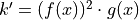. Is the graph of concave up or down at the point where  ? Give a reason for your answer.
? Give a reason for your answer.
2021, Free Response, #5
Consider the function  whose curve is given by the equation
whose curve is given by the equation  for
for  .
.
Show that
 .
.Write an equation for the line tangent to the curve at the point
 .
.For
 and , find the coordinates of the point where the line tangent to the curve is horizontal.
and , find the coordinates of the point where the line tangent to the curve is horizontal.Determine whether
has a relative minimum, a relative maximum, or neither at the point found in part c. Justify your answer.
2005, Free Response, #4
x |
0 |
1 |
|
2 |
|
3 |
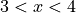 |
|
|
-1 |
Negative |
0 |
Positive |
2 |
Positive |
0 |
Negative |
|
4 |
Positive |
0 |
Positive |
DNE |
Negative |
-3 |
Negative |
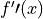 |
-2 |
Negative |
0 |
Positive |
DNE |
Negative |
0 |
Positive |


Let f be a function that is continuous on the interval  . The function f is twice differentiable except at
. The function f is twice differentiable except at  . The function f and its derivatives have the properties indicated in the table above, where DNE indicates that the derivatives of f do not exist at x = 2.
. The function f and its derivatives have the properties indicated in the table above, where DNE indicates that the derivatives of f do not exist at x = 2.
For
 , find all values of x at which f has a relative extremum. Determine whether f has a relative maximum or a relative minimum at each of these values. Justify your answer.
, find all values of x at which f has a relative extremum. Determine whether f has a relative maximum or a relative minimum at each of these values. Justify your answer.Sketch the graph of a function that has all the characteristics of f .
2023, Free Response, #4
The function is defined on the closed interval ![[-2, 8]](../../../_images/math/e8dfe42bcb9fbeb016f30548e870bd158665d4b6.png) and satisfies 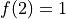. The graph of
and satisfies 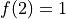. The graph of  , the derivative of , consists of two line segments and a semicircle, as shown in the figure below,
, the derivative of , consists of two line segments and a semicircle, as shown in the figure below,

Does f have a relative minimum, a relative maximum, or neither at
 ? Give a reason for your answer.
? Give a reason for your answer.On what open intervals, if any, is the graph of f concave down? Give a reason for your answer.
Find the value of
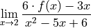
or show that it does not exist. Justify your answer.
Find the absolute minimum value of f on the closed interval
. Justify your answer.
2022, Free Response, #3

Let be a differentiable function with 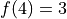 . On the interval  , the graph of , the derivative of , consists of a semicircle and two line segments, as shown in the figure above.
, the graph of , the derivative of , consists of a semicircle and two line segments, as shown in the figure above.
Find
 and 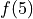.
and 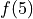.Find the
 -coordinates of all points of inflection of the graph of for
-coordinates of all points of inflection of the graph of for  . Justify your answer.
. Justify your answer.Let
be the function defined by 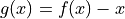. On what intervals, if any, is decreasing for ? Show the analysis that leads to your answer.For the function
defined in part c, find the absolute minimum value on the interval . Justify your answer.
2021, Free Response, #5
Consider the function  whose curve is given by the equation
whose curve is given by the equation  for .
for .
Show that
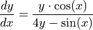
Write an equation for the line tangent to the curve at the point
For
and  , find the coordinates of the point where the line tangent to the curve is horizontal.
, find the coordinates of the point where the line tangent to the curve is horizontal.Determine whether f has a relative minimum, a relative maximum, or neither at the point found in part c. Justify your answer.
2006, Free Response, Form B, #2

Let be the function defined for  with
with  and the first derivative of , given by 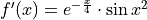. The graph of 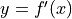 is shown above.
and the first derivative of , given by 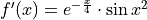. The graph of 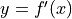 is shown above.
Use the graph of
to determine whether the graph of is concave up, concave down, or neither on the interval . Explain your reasoning.On the interval
 , find the value of x at which f has an absolute maximum. Justify your answer.
, find the value of x at which f has an absolute maximum. Justify your answer.Write an equation for the line tangent to the graph of
at .
2006, Free Response, Form B, #3

The figure above is the graph of a function of x, which models the height of a skateboard ramp. The function meets the following requirements.
At
, the value of the function is 0, and the slope of the graph of the function is 0.
At
Between
Let
 , where
, where  is a nonzero constant. Show that it is not possible to find a value for a so that meets requirement ii above.
is a nonzero constant. Show that it is not possible to find a value for a so that meets requirement ii above.Let
 , where
, where  is a nonzero constant. Find the value of so that g meets requirement ii above. Show the work that leads to your answer.
is a nonzero constant. Find the value of so that g meets requirement ii above. Show the work that leads to your answer.Using the function
and your value of from part b, show that does not meet requirement iii above.Let 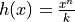, where
is a nonzero constant and  is a postive integer. Find the values of and so that meets requirement ii above. Show that h also meets requirements i and ii above.
is a postive integer. Find the values of and so that meets requirement ii above. Show that h also meets requirements i and ii above.
2017, Free Response, #3

The function on the closed interval ![[-6, 5]](../../../_images/math/0ed3c4acb86e516dd57225c9ca69d13e805b3c02.png) and satisfies
and satisfies  . The graph of , the derivative of , consists of a semicircle and three line segments, as shown in the figure above.
. The graph of , the derivative of , consists of a semicircle and three line segments, as shown in the figure above.
Find the values of
 and .
and .On what intervals is
increasing? Justify your answer.Find the absolue minimum value of
on the closed interval . Justify your answer.For each of 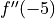 and 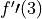, find the value or explain why it does not exist.
2018, Free Response, #5
Let be the function defined by  .
.
Find the average rate of change of
on the interval .What is the slope of the line tangent to the graph at 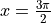?
Find the absolute minimum value of
on the interval  . Justify your answer.
. Justify your answer.Let
be a differentiable function such that 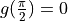. The graph of , the derivatibve of , is shown below. Find the value of 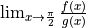 or state that it does not exist. Justify your answer.